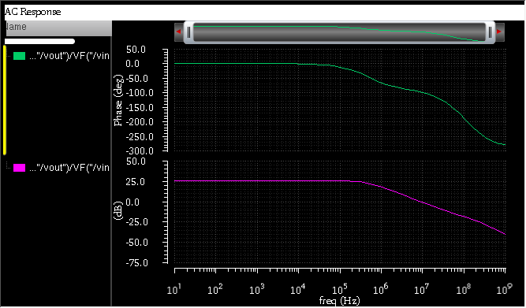

Introduction
Operational amplifiers (Op-Amps) are fundamental building blocks in analog and mixed-signal integrated circuits. They are widely used in amplification, filtering, signal conditioning, data converters, and control systems. This project focuses on the design and AC performance analysis of a CMOS operational amplifier using Cadence Virtuoso. The objective is to design the Op-Amp at transistor level and evaluate its frequency response using AC analysis in the Analog Design Environment (ADE).
Objectives
- Design a CMOS Op-Amp schematic in Cadence Virtuoso.
- Perform AC analysis using ADE.
- Determine key performance parameters: Open-loop gain, Gain Bandwidth Product (GBW), Phase margin, Unity gain frequency.
- Analyze stability and frequency response.
Design Methodology
Op-Amp Architecture
The designed Op-Amp is a two-stage CMOS operational amplifier, consisting of:
- Differential input stage: Provides high input impedance and converts differential input to single-ended output.
- Current mirror load: Active load to improve gain.
- Second gain stage: Provides additional voltage gain.
- Compensation capacitor: Ensures stability (Miller compensation).
Schematic Design
The Op-Amp schematic was created using CMOS NMOS and PMOS transistors. Key elements include Differential pair (M1, M2), Current mirror load (M3, M4), Second stage amplifier (M5), Bias current source, and Compensation capacitor (Cc). All transistors were properly sized to achieve the desired gain and bandwidth.
Simulation Setup
AC analysis was performed in ADE with the following configuration:
- AC sweep type: Logarithmic
- Frequency range: 10 Hz to 1 GHz
- Input: Small-signal AC source
- Output: Vout (Measurement: Vout/Vin)
AC Response Results
5.1 Open-Loop Gain
Low-frequency gain ≈ 25–30 dB. This indicates moderate amplification capability.
5.2 Gain Bandwidth Product (GBW)
Unity gain frequency is approximately several MHz. GBW is determined from the frequency where gain crosses 0 dB.
5.3 Phase Response
Phase decreases gradually with frequency. Total phase shift approaches approximately –250° to –300° at very high frequency.
5.4 Phase Margin
Phase margin is calculated at unity gain frequency. From the plot, the phase margin appears moderate. Stability is acceptable but can be improved by tuning the compensation capacitor.
Discussion
The Op-Amp exhibits expected behavior of a two-stage amplifier. The gain is lower than typical high-performance Op-Amps (usually 60–80 dB), suggesting that transistor sizing may need optimization or output resistance improvement is required. The phase roll-off indicates the presence of multiple poles. To improve performance, we can increase output resistance, increase the W/L ratio of gain transistors, optimize bias current, or adjust the Miller compensation capacitor.
Applications
This Op-Amp can be used in Low-frequency signal amplification, Active filters, Sensor interfacing circuits, and Analog signal conditioning blocks.
Conclusion
A CMOS two-stage operational amplifier was successfully designed and analyzed using Cadence Virtuoso. AC simulation results provided insight into gain, bandwidth, and stability characteristics. Although the Op-Amp demonstrates proper operation, further optimization is required to achieve higher gain and improved phase margin. This project provided practical experience in Analog IC design, Transistor-level modeling, Frequency response analysis, and Stability evaluation.
Future Work
- Perform DC operating point analysis and Transient response simulation.
- Measure slew rate and Evaluate power consumption.
- Layout design, post-layout simulation, and Monte Carlo analysis.